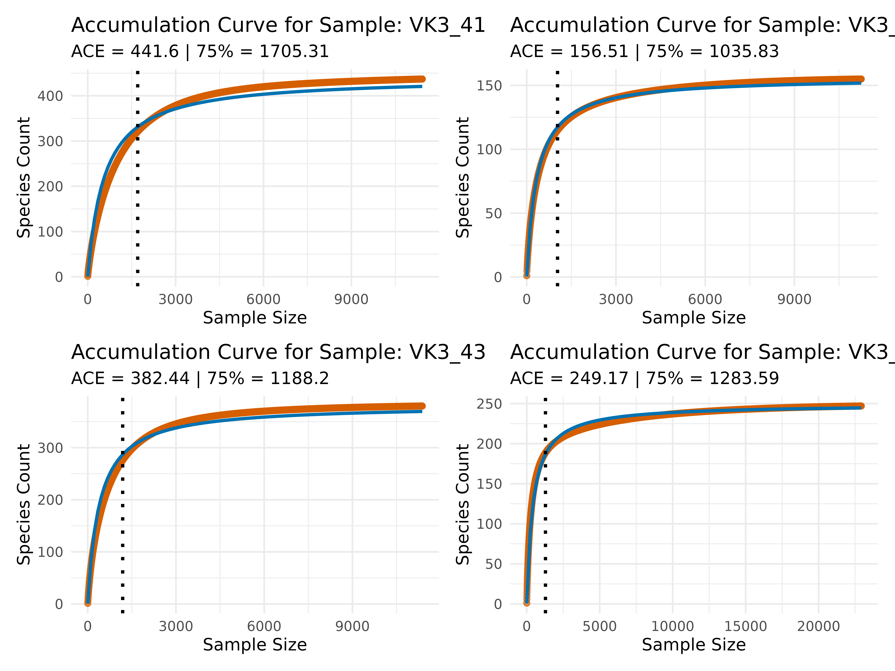
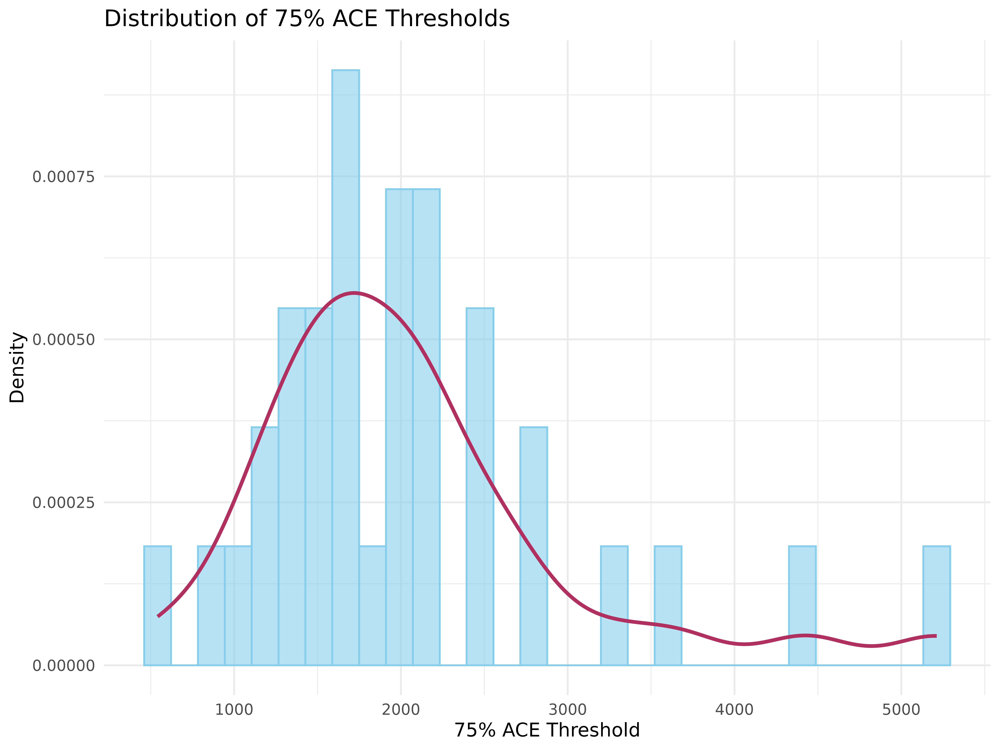
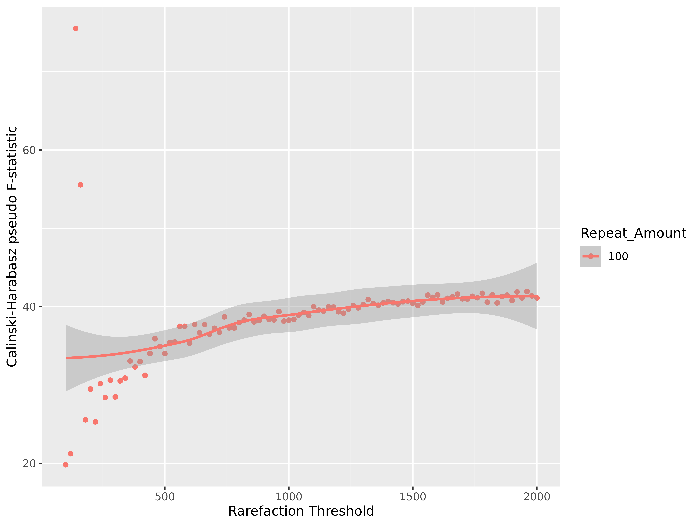
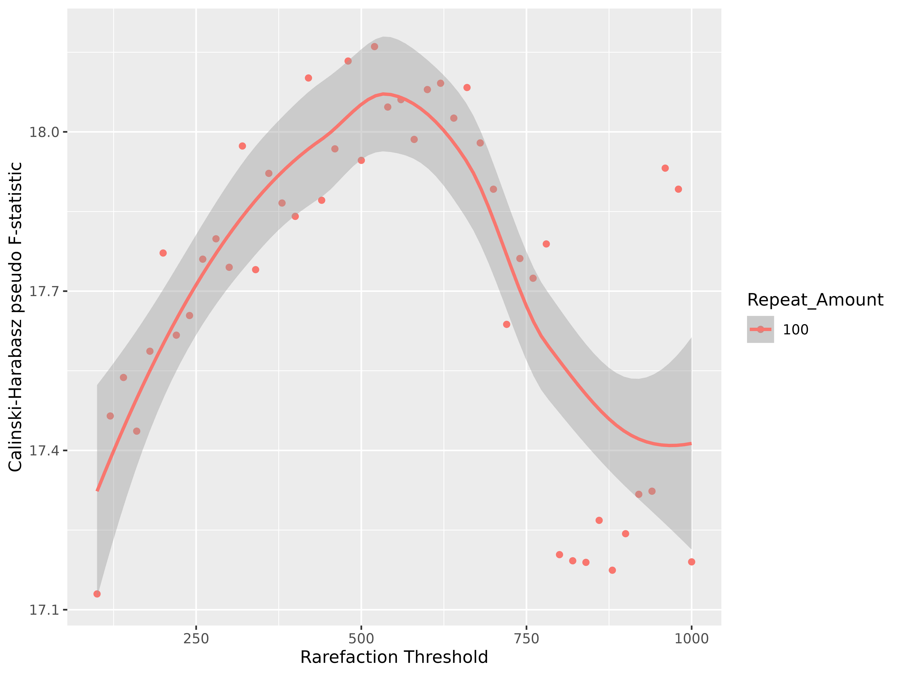
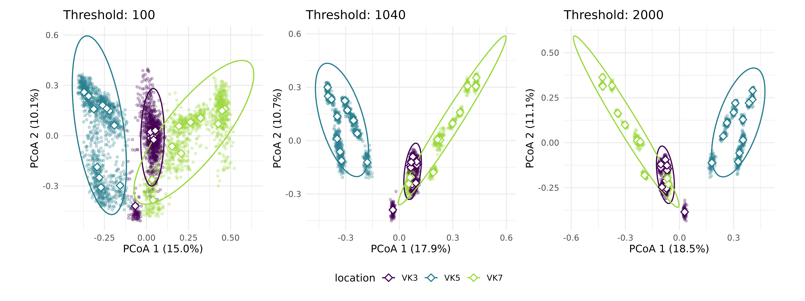
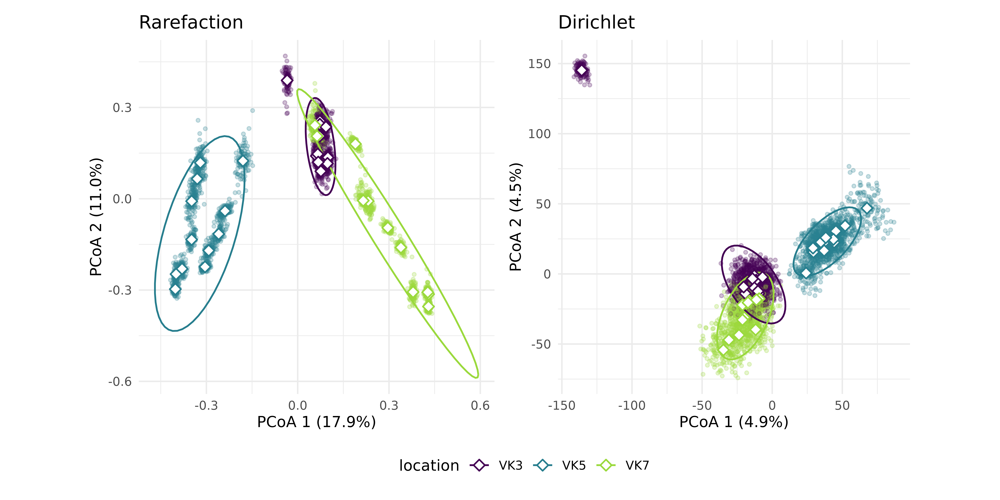

Evaluating sequencing-depth uncertainty with Sibyl
Lorenzo Assentato
2026-11-24
Sibyl.RmdOverview
Sibyl is an R package for evaluating how sequencing-depth, and thus uncertainty on community composition, affects beta-diversity ordinations. It does this through a repeated-ordination framework in which alternative representations of the same microbial count data are repeatedly generated, ordinated, aligned, and summarized. The package currently supports two uncertainty-generation workflows: repeated rarefaction and Dirichlet Monte Carlo sampling through ALDEx2.
In the rarefaction workflow, these plausible representations are generated by repeated subsampling at user-defined sequencing-depth thresholds. In the probability-based workflow, they are generated by Dirichlet Monte Carlo sampling through ALDEx2 and analysed using Aitchison distances.
The first part of this online documentation article focuses on the rarefaction workflow, because it also supports threshold selection. The final section demonstrates how the same downstream framework can be applied to Dirichlet Monte Carlo compositions.
Regardless of which uncertainty generator is used, Sibyl follows the same downstream framework:
Generate alternative community representations → compute ordinations → align replicate configurations by Procrustes transformation → summarize sample positions using consensus coordinates → visualize uncertainty with ordination clouds.
When performing Principal Coordinates Analysis (PCoA), or other types of ordinations, it is necessary to choose a rarefaction threshold which does not affect the structure of the data during exploratory analysis. This is one application the framework supports, not its only purpose.
The two main user-controlled ideas in Sibyl are the uncertainty generator and the number of replicate representations. The uncertainty generator defines how alternative versions of the community table are produced. In the rarefaction workflow, these are generated by repeated subsampling at one or more sequencing-depth thresholds. In the probability-based workflow, they are generated by Dirichlet Monte Carlo sampling. The number of replicates or draws controls how many alternative representations are generated, and therefore how finely uncertainty in ordination space is estimated.
In the rarefaction workflow, users additionally define the sequencing-depth threshold, or range of thresholds, to evaluate.
Keep in mind that increasing the number of replicates requires more computational power. The main limiting factor is the memory needed to store a large number of ordination results.
Example data
The data contained in the package and used for illustration comes from Illumina MiSeq paired-end sequencing of regions V3-V4 of the 16S genes. The samples used in the study are adult mosquitoes from Burkina Faso, a more thorough description is in the published paper from Buck et al. (2016). The other data provided in the package is a collection of mosquito larvae from Ethiopia from Assentato et al. (2025), which provides a wider array of sequence depths, from low to high.
Rarefaction workflow
Threshold selection is one application of the repeated-ordination framework: by repeatedly subsampling a dataset at a given sequencing depth, Sibyl estimates how much a sample’s ordination position is affected by that choice of depth.
Sample completeness and candidate threshold range
After loading the package the first step is to perform the calculation of accumulation (rarefaction) curves. This allows a rough understanding of how the sequencing depth relates to the completeness of each sample.
The function performs the calculation of rarefaction curves with the selected step size (a coarser step size requires less computational power).
The Abundance Coverage Estimator value (ACE) is calculated for each sample as a measure of sample richness, and a generic accumulation curve is fitted to the data, with its asymptote being the ACE value. This functionality is particularly useful to give a visual impression of where the curve “break-point” is, or where the curve is approaching the plateau, fixed as 75% of the ACE value.
Since in reality these samples never reach their ACE value, which is always way over their actual sequencing depth (due to it being an estimation), the “plateau” 75% threshold is to be considered just a guidance estimate. It is not an empiric measure, therefore should not be treated as such.
accumulation_result <- accumulation_test(adults, step = 5)The resulting list contains:
- accumulation_plot: Aggregated plot for all samples with fitted accumulation curves.
- threshold_density: 75% thresholds density plot.
- individual_plots: Individual rarefaction plots with fitted accumulation curves.
Let’s take a look at the first 4 individual accumulation plots:
patchwork::wrap_plots(
accumulation_result$individual_plots[1:4],
nrow = 2, ncol = 2
)
The density plot is a visual summary of the range at which most of the 75% thresholds calculated on the dataset fell.
accumulation_result$threshold_density
Together, the results produced from this test can be used to choose an appropriate threshold range to perform the rest of the analysis.
Ideally, while prioritizing sample completeness, we want to make sure to select a threshold which allows us to keep most of our samples. In this particular case, to not render the dataset unbalanced.
Repeated threshold testing with test_threshold()
We proceed by running now the main testing function in the Sibyl package.
Since most of our 75% thresholds, according to the accumulation analysis, falls in the range between 1000-2000 (and since we are interested in seeing how low we can push this specific dataset), we select a range going from 100 to 2000.
Optionally, the repeat number can be a vector of different values. In that case the testing over different thresholds takes place at different repeat amounts, and it is possible to directly explore how the amount of subsampling events affects rarefaction and sample position in the ordination.
The choice of a range to test your data on should always be made considering the compromise between sample completeness (how well described is the sample microbial community according to the previous analysis), and how many samples are excluded or included when changing rarefaction threshold.
threshold_test_result <- test_threshold(adults,
repeats = 100,
t_min = 100,
t_max = 2000,
t_step = 20,
group = "location",
cores = 1)This function produces a series of results which can be visualized immediately or through auxiliary functions.
The Calinski-Harabasz (CH) index
That is probably the most important result. It shows how the Calinski-Harabasz index (CH) changes when increasing rarefaction threshold. The index is a ratio of the between-cluster separation (BCSS) to the within-cluster dispersion (WCSS), normalized by their number of degrees of freedom. A higher index means that the between cluster separation is getting bigger and clusters are less spread out. The index is calculated from native, unstandardized consensus mean coordinates obtained from repeated subsampling. The clusters are defined as the “group” variable used in the function “threshold_test_result”.
A CH plateau indicates little additional change in group separation, but does not prove that sample clouds are tight. Evaluate it alongside APD and sample retention. CH now uses native consensus coordinates, rather than axis-standardized coordinates.
threshold_test_result$index_plot
threshold_test_result$index_data
#> Repeat_Amount Threshold Index
#> 1 100 100 19.82520
#> 2 100 120 21.23635
#> 3 100 140 75.51206
#> 4 100 160 55.55856
#> 5 100 180 25.55384
#> 6 100 200 29.47915
#> 7 100 220 25.29569
#> 8 100 240 30.17736
#> 9 100 260 28.40273
#> 10 100 280 30.61447
#> 11 100 300 28.47573
#> 12 100 320 30.52464
#> 13 100 340 30.88660
#> 14 100 360 33.06195
#> 15 100 380 32.30743
#> 16 100 400 32.98183
#> 17 100 420 31.23796
#> 18 100 440 34.03499
#> 19 100 460 35.90854
#> 20 100 480 34.90602
#> 21 100 500 34.00664
#> 22 100 520 35.41078
#> 23 100 540 35.48880
#> 24 100 560 37.48862
#> 25 100 580 37.49288
#> 26 100 600 35.34822
#> 27 100 620 37.73414
#> 28 100 640 36.68331
#> 29 100 660 37.71982
#> 30 100 680 36.47990
#> 31 100 700 37.23845
#> 32 100 720 36.71355
#> 33 100 740 38.70054
#> 34 100 760 37.29310
#> 35 100 780 37.28325
#> 36 100 800 37.99160
#> 37 100 820 38.28776
#> 38 100 840 39.01685
#> 39 100 860 38.05121
#> 40 100 880 38.25654
#> 41 100 900 38.77529
#> 42 100 920 38.39189
#> 43 100 940 38.28980
#> 44 100 960 39.36528
#> 45 100 980 38.15787
#> 46 100 1000 38.26981
#> 47 100 1020 38.38322
#> 48 100 1040 38.91946
#> 49 100 1060 39.24211
#> 50 100 1080 38.86232
#> 51 100 1100 39.99888
#> 52 100 1120 39.55748
#> 53 100 1140 39.44226
#> 54 100 1160 39.99699
#> 55 100 1180 39.94499
#> 56 100 1200 39.35334
#> 57 100 1220 39.15677
#> 58 100 1240 39.66356
#> 59 100 1260 40.15209
#> 60 100 1280 39.85033
#> 61 100 1300 40.25988
#> 62 100 1320 40.92710
#> 63 100 1340 40.38898
#> 64 100 1360 40.18252
#> 65 100 1380 40.48888
#> 66 100 1400 40.65098
#> 67 100 1420 40.50184
#> 68 100 1440 40.32826
#> 69 100 1460 40.62826
#> 70 100 1480 40.71093
#> 71 100 1500 40.44651
#> 72 100 1520 40.16507
#> 73 100 1540 40.59470
#> 74 100 1560 41.47411
#> 75 100 1580 41.19361
#> 76 100 1600 41.50180
#> 77 100 1620 40.60750
#> 78 100 1640 41.06505
#> 79 100 1660 41.27696
#> 80 100 1680 41.60088
#> 81 100 1700 41.00043
#> 82 100 1720 40.98821
#> 83 100 1740 41.32204
#> 84 100 1760 41.14526
#> 85 100 1780 41.70531
#> 86 100 1800 40.57313
#> 87 100 1820 41.50377
#> 88 100 1840 40.47635
#> 89 100 1860 41.29032
#> 90 100 1880 41.46687
#> 91 100 1900 40.78905
#> 92 100 1920 41.88647
#> 93 100 1940 41.10034
#> 94 100 1960 41.95133
#> 95 100 1980 41.37659
#> 96 100 2000 41.12409In this other example, we can see what happens when there are samples in the dataset which do not have enough reads to meet the rarefaction threshold.
A drop in CH can reflect changed group separation and/or sample exclusion. Use the reported sample identities and library sizes to establish when samples are removed; a drop alone does not identify its cause. Evaluate CH, APD and retention together rather than automatically maximizing CH.
This has been performed on a different dataset, accessible (when package is not loaded) with:
data(larvae)
Ordination clouds across thresholds
The ordination_plots element contains all the individual
ordinations for the selected repetition number across the whole
threshold range to test.
Let’s take a look at some of them (lowest threshold, median and highest):
# Isolate the repeat number we need:
ordination_plots <- threshold_test_result$ordination_plots$`repeat_number 100`It is possible to see how the ordination changes according to the rarefaction threshold, and how the highest value is not necessarily making a big difference when compared to the median. The biggest impact lies in the initial increase of the threshold, but after a critical point the sample clouds are stable and thus not really affected by the stochastic subsampling procedure.
Thus, this also means that going under a specific rarefaction value might impact our ordination because of an artificial increase of point dispersal, which in turn introduces a bias creating an artificial overlap of two groups which are normally separated.
# Print first, middle and last plot:
n <- length(ordination_plots)
# Get indices
indices <- unique(c(1, ceiling(n / 2), n))
selected_plots <- lapply(indices, function(i) ordination_plots[[i]])
patchwork::wrap_plots(selected_plots, nrow = 1, guides = "collect") &
ggplot2::theme(legend.position = "bottom")
Axis percentages refer to the first replicate used as the Procrustes reference, with the sum of absolute eigenvalues as denominator. Coordinates retain native units and equal axis scaling. Replicates are aligned within each depth; independently generated reference ordinations can have different axis orientations across depths.
Average pairwise distance (APD)
The avg_distances element is a list of dataframes which
contains the values of average pairwise distances (APD) for each cloud
of points (subsampling ordination results) generated from a single
sample.
A decreasing trend means that the average pairwise distance of the cloud gets smaller.
Measuring APD is especially valuable to give further insight into when we reach a point of diminishing returns on the ordination structure. When increasing the threshold no longer substantially decreases APD, further depth provides diminishing improvements in sample-position stability. A plateau does not by itself show that the remaining dispersion is small.
APD_plots <- threshold_test_result$avg_distances$repeat_number_100
avg_pairwise_dist_plot(APD_plots)
Interpreting the rarefaction workflow
Choose a tested depth by inspecting the numerical CH results, sample-wise APD and retained-sample identities together. The grid above contains 740 and 760 reads, but not 750; no result for 750 should be inferred without evaluating it explicitly. Use a depth that is explicitly evaluated and report its CH, APD and retained samples together.
The rarefaction workflow allowed us to explore the effect of different rarefaction thresholds, and to confirm that lowering a threshold to include more samples does not necessarily affect our exploratory analysis, which is still valid for relatively low threshold numbers. This is one application of Sibyl’s repeated-ordination framework, focused specifically on threshold selection. The same framework can be used more generally to evaluate ordination uncertainty, as shown next.
Probability-based workflow
The Dirichlet workflow uses the same downstream repeated-ordination framework as the rarefaction workflow, but allows users to examine compositional uncertainty without discarding reads through rarefaction.
Instead of repeatedly subsampling reads,
dirichlet_ordination() performs repeated Monte Carlo
sampling from the Dirichlet posterior distribution estimated by
ALDEx2::aldex.clr(). Each Monte Carlo draw represents one
plausible compositional state of the observed count data, given its
Dirichlet posterior. These replicate compositions are ordinated using
Aitchison distances, aligned, and summarized with
consensus coordinates and uncertainty clouds as per the rarefaction
workflow.
Ordination clouds should be interpreted as probability-based compositional uncertainty, arising from how confidently the observed counts reflect the underlying community proportions.
set.seed(20)
rarefaction_result <- repeated_rarefaction(adults,
repeats = 100,
threshold = 1000,
group = "location",
colorb = "location",
cloud = TRUE,
ellipse = TRUE, cores = 1)
set.seed(20)
dirichlet_result <- dirichlet_ordination(adults,
draws = 128,
group = "location",
colorb = "location",
cloud = TRUE,
ellipse = TRUE, cores = 1)
patchwork::wrap_plots(
rarefaction_result$plot + ggplot2::ggtitle("Rarefaction"),
dirichlet_result$plot + ggplot2::ggtitle("Dirichlet"),
nrow = 1, guides = "collect"
) & ggplot2::theme(legend.position = "bottom")
Both panels show the same samples, with consensus mean coordinates marked by hollow diamonds and groups identified using a discrete viridis palette. Output can be compared conceptually with the rarefaction-based ordination clouds, but since the two workflows use different distance measures (Bray-Curtis for rarefaction, Aitchison for the Dirichlet approach) and different sources of stochasticity, the absolute orientation and scale of the two ordinations should not be overinterpreted.
Compare within-workflow patterns of sample sensitivity qualitatively, rather than numerical cloud sizes across the two distance geometries: samples with lower sequencing depth tend to show a wider cloud under repeated rarefaction, since low depth means each subsample discards proportionally more of the observed community. The Dirichlet-based approach instead captures uncertainty in the estimated community composition given the observed counts, rather than uncertainty introduced by repeatedly discarding reads through rarefaction.
Using both approaches side by side gives a more complete picture of how much of the variability observed in an ordination is attributable to the chosen subsampling scheme, versus how much reflects genuine uncertainty in the compositional estimate itself.
Practical notes
- Number of repeats/draws: more replicates give a finer estimate of ordination uncertainty, at the cost of more computation. A small number (below 5) is not enough to draw confidence ellipses, and Sibyl will warn and skip them automatically.
- Memory and runtime: each replicate requires its own ordination and Procrustes alignment. The main limiting factor for larger datasets or higher repeat/draw counts is usually available memory to store all the replicate results, not raw computation time.
- Sample retention: in the rarefaction workflow, samples whose read count falls below the chosen threshold are removed before ordination, and Sibyl issues a warning listing them. The Dirichlet workflow does not discard samples this way, since it does not depend on a sequencing-depth threshold.
- Comparing across distance metrics: Bray-Curtis and Aitchison ordinations have different geometries. Compare qualitative patterns of sensitivity within each workflow, not numerical cloud sizes or exact coordinates across workflows.
- Axis labels and scaling: native PCoA scores are plotted with equal coordinate units. Axis percentages refer to the first replicate used as the Procrustes reference, with the sum of absolute eigenvalues (including negative ones) as denominator. They do not describe a separate decomposition of the consensus.
-
Excluded samples: APD is missing (
NA) after sample exclusion, rather than zero. - Documentation delivery: this online article is not installed as a package vignette.
Numerical summary of the worked example
This worked example uses 1,000 reads as an illustrative lower-depth setting, not an estimated universal optimum. Inspect its retained samples, native-coordinate CH and sample-wise APD together. The following table extracts the actual results from the scan above; APD summaries omit excluded samples. At 2,000 reads APD continues to decrease, so choosing 1,000 does not imply complete stabilization.
phyloseq::nsamples(adults)
#> [1] 34
phyloseq::ntaxa(adults)
#> [1] 5221
range(phyloseq::sample_sums(adults))
#> [1] 2960 64464
chosen <- threshold_test_result$index_data[
threshold_test_result$index_data$Threshold == 1000, ]
chosen_apd <- threshold_test_result$avg_distances$repeat_number_100
chosen_apd <- chosen_apd$Avg_Distance[chosen_apd$Threshold == 1000]
data.frame(
depth = 1000,
retained = sum(is.finite(chosen_apd)),
CH = chosen$Index,
APD_median = median(chosen_apd, na.rm = TRUE),
APD_q25 = unname(quantile(chosen_apd, 0.25, na.rm = TRUE)),
APD_q75 = unname(quantile(chosen_apd, 0.75, na.rm = TRUE))
)
#> depth retained CH APD_median APD_q25 APD_q75
#> 1 1000 34 38.26981 0.02916393 0.02166532 0.03748529Data references
Buck, M., Nilsson, L., Brunius, C. et al. Bacterial associations reveal spatial population dynamics in Anopheles gambiae mosquitoes. Sci Rep 6, 22806 (2016).
Assentato, L., Nilsson, L., Brunius, C. et al. The type of environment has a greater impact on the larval microbiota of Anopheles arabiensis than on the microbiota of their breeding water, FEMS Microbiology Ecology, Volume 101, Issue 1, (2025).